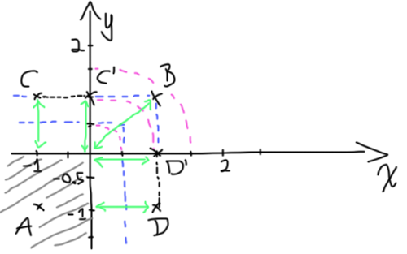

Sphere Tracing 103
February 11th 2016
(Take me back to the Blog section!)
In this I'll be creating a new geometric object using signed distance fields. Let's pick up where we left off at the end of Sphere Tracing 102 with the following shader: https://www.shadertoy.com/view/4ljXRh.
We've already covered how to describe a sphere object as a signed distance function back in the Sphere Tracing 101 post, so the next shape on the chopping block is the cube!
Let's once again start off trying to solve this problem in a 2D space. Assume we have an arbitrary point P(x,y) and we'd like to know its distance to the nearest of the square's four faces (setting the distance to a negative value when the point lies inside the sqare).
Here, we have four "2D planes" (lines, really) N, S, E and W. The function d(p) returns the largest signed distance between p and the four lines. Let the lines be defined by:N: y = 3...and let P have coordinates (4,5)
S: y = 1
E: x = 3
W: x = 1
We'll define the signed distance function as follows:d(p) = max(dN(p), dS(p), dE(p), dW(p))
where the four lines' signed distance function are defined as:dN(p) = p.y - 3 = 2
dS(p) = 1 - p.y = -4
dE(p) = p.x - 3 = 1
dW(p) = 1 - p.x = -3
So here we have d(p) = 2. Note that this is in fact smaller than the distance between P and our square, but this will work because it will allow us to take further steps towars it until we're within epsilon of it and consider it a valid hit. This being said, we will later examine a more accurate way of measuring the distance between a point and a square/cube for these (litteral) edge cases.
So now let's take this 2D signed distance and move it into 3D space! In much the same way we defined our N, S, E and W lines we can define the six planes forming the face of our cube like so (let 2*s be the length of our cube's edges):N: y = s
S: y = -s
E: x = s
W: x = -s
F: z = s
B: z = -s
Now we get a signed distance function for each one of the faces:dN(p) = p.y - s
dS(p) = -s - p.y
[etc...]
Taking the max value of all of these 6 functions will give us the final distance function d. Let's write some code now to see if any of this is right or if I'm full of shit and made up a bunch of nonsense math. Let's replace the contents of the old distanceToNearestSurface function.
float distanceToNearestSurface(vec3 p){
float s = 1.4;
float dN = p.y - s;
float dS = -s - p.y;
float dE = p.x - s;
float dW = -s - p.x;
float dF = p.z - s;
float dB = -s - p.z;
float x = max(dE, dW);
float y = max(dN, dS);
float z = max(dF, dB);
return max(max(x, z), y);
}Because the light we set up in the previous blog post is set to rotate around the object the cube might take a few seconds to show up, but it's there alright. It's sort of hard to see because the camera is sitting directly in front of it, so let's make the camera rotate around the cube at an angle so we can get a better look at it to make sure it renders as expected. We'll move the cameraPosition, cameraDirection and cameraUp variables into the mainImage() function since those will be different for each frame.
void mainImage( out vec4 fragColor, in vec2 fragCoord )
{
vec2 uv = fragCoord/iResolution.xy;
float cameraDistance = 10.0;
vec3 cameraPosition = vec3(10.0*sin(iGlobalTime), 0.0, 10.0*cos(iGlobalTime));
vec3 cameraDirection = vec3(-1.0*sin(iGlobalTime), 0.0, -1.0*cos(iGlobalTime));
vec3 cameraUp = vec3(0.0, 1.0, 0.0);
[...]
}The cube edges seem rounder than we'd like them to be. This is due to S, which determines how far we move along the x, y and z axes when computing the surface normal. A larger value will result in rounder corners whereas a smaller S will yield sharp edges. This could be use for stylistic effect, depending on what look you're after. For the purpose of this blog post, we'll tighten the edges by setting a new value for S of 0.01.
Now let's go back to our cube distance function implementation for a minute to see if there's room for improvement. Here we're calculating 6 different point to surface distances and taking the max of all 6. Do we really need to do this? (spoiler alert: nah, we don't)
The assumption here is that the cube we're describing is centred around the origin and that each of its vertices lies at equal distance from the origin (that's a roundabout way of saying "that's a cube"). So if we were to take our point P's reflection by any of the x, y or z axes it would lie at an equal distance from the cube.
Let's go back to my crappy 2D doodles to break it down in easier to understand bits:
Here, P lies in the bottom left quadrant. The other three grey points are its reflection by the x, y and xy axes (where xy means both reflections are applied one after the other in whichever order). You can see that the distance function remains constant for all reflections of P. What this allows us to do is to take any P we're given, take the absolute value of all of its coordinates (effectively turning it into the reflection in the top right quadrant) and only do the distance calculations for the top face and the right face of the square. This will work because by forcing our point P into the top right quadrant we know the nearest faces will always be either the top or right face, meaning we can ignore the other two faces and spare ourselves these calculations!
Now our distance function looks like this:d(P) = max(dN(abs(P)), dE(abs(P)))
dN(p) = p.y - s
dE(p) = p.x - s
We've (kinda) halved our calculations! The (kinda) is there because now we have the extra cost of calculating abs(P), though it's definitely a worthwhile trade. Let's skip back to 3D and rewrite our distance function with this idea in mind:
float distanceToNearestSurface(vec3 p){
float s = 1.0;
vec3 absP = abs(p);
float dN = absP.y - s;
float dE = absP.x - s;
float dF = absP.z - s;
return max(max(dN, dE), dF);
}The three variables dN, dE and dF are all individual components of a vector, so we could easily rewrite the code like so:
float distanceToNearestSurface(vec3 p){
float s = 1.0;
vec3 q = abs(p) - vec3(s);
return max(max(q.x, q.y), q.z);
}Now while this approach works, it doesn't hold up as a rigorous signed distance field. Let's have a look at why that is and how we can fix it.
What I've drawn here is a representation of a square's signed distance field. The blue lines represent the area of the graph where d(P) equals 1, 2, 3 and 4. You'll notice that if we take a point P that is both above the top face of the square and to the right of it, we get a smaller d(P) (d1 in this example) relative to the true distance between P and the square, illustrated by the green line d2.
This means that with our rendering algorithm, if the distance function returned d2, we would step right onto the cube's surface and detect a hit in just one step. Having the distance function return d1 instead forces us to take a smaller step towards our target, so instead of detecting a hit in one step we wind up taking several unnecessary steps. How can we fix our distance field to avoid this? What's our ideal distance field supposed to look like?

This drawing got a bit messier than intended, but bear with me here. The added pinkish purplish lines are what the corner area of the distance field should look like if it were truly representative of the distance between P and the square. It's really a series of circles centred on the corner of the square, which should give us a good hint as to where to look first.
Let's consider our two main cases here:
- The point lies below the top face or to the left of the right face (in this case our current distance function accurately represents the distance between P and the square)
- The point lies off in the top right area deleniated by the dashed pink lines where our current distance function is broken.
Now let's redraw this with the origin offset to the square's corner.
You'll notice that point P turned into q because the change of basis we did here is in fact equivalent to this line in our code:
vec3 q = abs(p) - vec3(s);It should be fairly easy to note that we can now tell when to use which of the two distance functions (blue vs. pink) based on q's coordinates: if either of its x or y is negative, we want to use the blue, otherwise use the pink. This pink distance function is simply the distance from q to the origin, and we've already implemented the blue distance function. Bringing this idea back into the 3rd dimenison is fairly straightforward - we get our q and if any of its components are negative, we use the old distance function. Otherwise we should return the distance between q and the origin, ie. the length of q. This should be familiar given we've already talked about signed distance function for spheres :)
float distanceToNearestSurface(vec3 p){
float s = 1.0;
vec3 q = abs(p) - vec3(s);
float dist = max(max(q.x, q.y), q.z);
if(q.x > 0.0 && q.y > 0.0 && q.z > 0.0){
dist = length(q);
}
return dist;
}This code is an almost verbatim transcription of the paragraph above and is fairly clunky. We'd like to avoid using an if statement there, so let's consider ~*(author forgets to finish sentence)*~
This is the point where I tab over to http://iquilezles.org/ (a wonderful resource maintained by Íñigo Quílez) to try and remember what signed distance function I was trying to arrive at.
// Refernce code from:
// http://iquilezles.org/www/articles/distfunctions/distfunctions.htm
// yes, it's missing an 'l' at the end - no, that's not a typo
float sdBox( vec3 p, vec3 b )
{
vec3 d = abs(p) - b;
return min(max(d.x,max(d.y,d.z)),0.0) +
length(max(d,0.0));
}The way this code works might not be obvious right away. I'd encourage you to look at it and try to figure it out on your own before reading on. I had to think about it for quite a while and graph out a 2D version before it clicked in my head.
So then, here's the 2D graph and how I made sense of the formula:
Consider the four points, A, B, C and D. Let's crudely reduce the distance function to try and get rid of the min/max functions in order to understand their effect (since that's what's puzzling about this function). The notation below is a little sloppy, I'm using square brackets to denote 2D vectors.
// 2D version of the function
d(p) = min(max(p.x, p.y), 0)
+ length(max(p, 0))
---
d(A) = min(max(-1, -1), 0)
+ length(max([-1, -1], 0))
d(A) = -1 + length[0, 0]
---
d(B) = min(max(1, 1), 0)
+ length(max([1, 1], 0))
d(B) = 0 + length[1, 1]Ok, so far nothing special. When A is inside the square, we essentially get our first distance function based on planes/lines and when B is in the area where our first distance function is inaccurate, it gets zeroed out and we get the second distance function (the length). The trick lies in the other two cases C and D. Let's work them out.
d(C) = min(max(-1, 1), 0)
+ length(max([-1, 1], 0))
d(C) = 0 + length[0, 1]
---
d(D) = min(max(1, -1), 0)
+ length(max([-1, 1], 0))
d(D) = 0 + length[1, 0]If you look back to the graph above, you'll note C' and D'. Those points have coordinates [0,1] and [1,0], respectively. This method uses the fact that both distance fields intersect on the axes - that D and D' lie at the same distance from the square.
If we zero out all negative component of a vector and take its length we will get the proper distance between the point and the square (for points outside of the square only). This is what max(d,0.0) does; a component-wise max operation. So long as the vector has at least one positive component, min(max(d.x,d.y),0.0) will resolve to 0 leaving us with only the second part of the equation. In the event that the point is inside the square, we want to return the first part of the equation (since it represents our first distance function). If all components of the vector are negative it's easy to see our condition will be met.
This understanding should tranlsate back into 3D seamlessly once you wrap your head around it. You may or may not have to draw a few graphs by hand to really "get" it - I know I did and would encourage you to do so if you're dissatisfied with my explanation.
Working this implementation into our own code, we get this:
float distanceToNearestSurface(vec3 p){
float s = 1.0;
vec3 d = abs(p) - vec3(s);
return min(max(d.x, max(d.y,d.z)), 0.0)
+ length(max(d,0.0));
}And there you have it, a cube for our world.
I'm not entirely sure what topic I'll cover next, though I'm fairly sure it won't be another volume implementation (I'd like to keep things fresh and switch it up). Regardless you can expect yet more in this series :) cheers.